🌿 AUTONOMOUS SENSING SUITE
⚡ 12-BIT OVERSAMPLED ADC
🛰️ SYNOPTIC NWP FUSION
Autonomous Agro-Climatic Intelligence & Environmental Telemetry Platform
Continuous in-situ microclimate sensing, subsurface hydrometry, pluviometric acoustics, and predictive meteorological model synthesis.
CONNECTING...
GitHub Repo
Physical Environmental Sensors
ESP32 TELEMETRY · 2500ms INTERVAL
Ambient Temperature
-- °C
DHT11 Sensor · GPIO 4
Relative Humidity
-- %
DHT11 Capacitive Polymer
Soil Volumetric Moisture
-- %
Calibrating probe...
Precipitation Sensor
--
Conductive serpentine plate
Numerical Weather & Multi-Day Forecast
OPEN-METEO NUMERICAL WEATHER PREDICTION API
Acquiring satellite coordinate lock...
--°C
Fetching atmospheric telemetry...
🌤️
APPARENT (FEELS LIKE)
--°C
STATION HUMIDITY
--%
10M WIND VELOCITY
-- km/h
PRECIPITATION ACCUMULATION
-- mm
24-Hour Micro-Forecast Timeline
Hourly thermodynamic trajectory and precipitation probability
Loading hourly model sequence...
7-Day Synoptic Weather Outlook
Diurnal temperature extrema and maximum precipitation probability
Computing weekly forecast matrices...
Forecast Analytical Curves
Next 24 hours · Thermal gradient vs precipitation probability %
Weather telemetry initialized.
Real-Time Dynamic Telemetry
CONTINUOUS HIGH-FREQUENCY TIME SERIESDHT11 Thermal & Atmospheric Dynamics
Ambient Temperature (°C) & Relative Humidity (%)
Subsurface Soil Moisture Dynamics
Volumetric moisture retention curve (%)
Smart Environmental Advisor Engine
MULTI-TIERED AGRONOMIC & METEOROLOGICAL FUSION✧ Real-Time Agronomic & Climate Recommendations
Synthesized by fusing physical in-situ sensor data with 48-hour forward numerical weather forecast models.
Initializing Advisor Subsystem
Evaluating real-time environmental matrices and soil boundary conditions...
Evaluating real-time environmental matrices and soil boundary conditions...
Hardware Diagnostics & Device State
MICROCONTROLLER PERIPHERAL REGISTER STATUS
ESP32 Microcontroller Node
Connecting...
DHT11 Digital 1-Wire Bus (GPIO 4)
WAITING INITIAL READ
Active Alarm Buzzer Circuit (GPIO 26)
STANDBY (GPIO 26 LOW)
Soil Sensor Raw ADC Count (GPIO 34)
--
Rain Sensor Raw ADC Count (GPIO 35)
--
ADC Resolution & Attenuation
12-bit (0-4095 counts) · 11dB Attenuation (0 - 3.3V)
Last Successful Telemetry Refresh
--